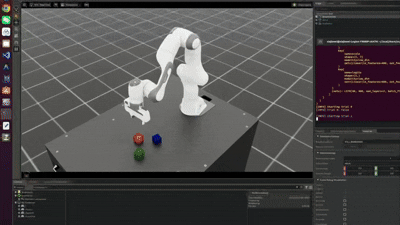
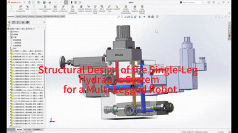

|
Jiawei Xia I am a undergraduate student at Beijing University of Chemical Technology (BUCT). My major is Mechanical Design, Manufacturing and Its Automation(Robotics), and I am currently in my last year of BUCT. In the past, I worked as a remote research assistant at George Mason University MICO Lab. I worked as a research intern at Institute for AI Industry Research, Tsinghua University. Now, I am working as a research intern at Institute of Navigation and Control, Tsinghua University; under the supervision of Dr. Yongliang Shi and Dr. Weining Lu.During my time at BUCT, I am maintaining a GPA of 3.74 (rank 5%) and leading the SIE Robotics Club, a student organization focused on general-purpose service robots, and mentored lower-year students interested in robotics. I am currently interested in robotics research, including Reinforcement learning, Vision-language-action models and Spatial intelligence. In my spare time, I enjoy photography, traveling, Formula 1 and basketball. Email: xiaharroldqq@gmail.com LinkedIn / GitHub / X / bilibili / Google Scholar / Rednote / YouTube |
🔥 News
|
{kind=link}
🧑🎓 Education |

|
Beijing University of Chemical Technology, Beijing, China
Bachelor of Engineering, Mechanical Design, Manufacturing and Its Automation (Robotics) 2022.9-Now GPA: 3.74/4.33 Rank 5% Ex-president of SIE Robotics Club. |
💻 Internship |

|
Discover Lab, Institute for AI Industry Research, Tsinghua University
Intern Advisor: Dr. Yongliang Shi and Dr. Weibin Gu 2025.6-2025.9 Focus on Humanoid robot reinforcement learning. Reproduced a 15-degree-of-freedom remote control glove based on the open-source project Homie, enabling the teleoperation of the Inspire RH56E2 dexterous hand of the Unitree G1 robot. |

|
Institute of Navigation and Control, Tsinghua University
Intern Advisor: Dr. Yongliang Shi and Dr. Weining Lu 2024.12-Present Participated in the development of an Illumination-Robust Point-line-Thermal-LiDAR-Inertial SLAM system. Participated in the multi-modal manipulation framework for robotic kitchen manipulation. |

|
Multi-agent Intelligence, Control, and Optimization Lab, George Mason University
Remote research assistant Advisor: Dr. Yizhi Zhou 2024.9-2025.2 Participated in the development of a Robust Online Calibration Framework for UWB anchors in VINS to improve anchor positioning accuracy and robot localization. |
📚 Publications* : Equal contribution; †: Corresponding author(s) |

|
(Submitted) HeatSurf:Thermal Cues Enable Temperature-Aware dexterous Manipulation
Yiping Lu*, Caiyun Liu, Jiawei Xia, Haozhe Lou, Yongliang Shi† CVPR, 2026 [Paper] [Video] Kitchen robotic manipulation often involves thermal interactions, but mainstream RGB-D-based robot methods ignore this key thermal modality. To fix this, we present HeatSurf—a plug-and-play module that gives robots surface-based thermal perception: it adds a thermal sensor to an RGB-D camera, maps per-point thermal intensity/gradients to a Gaussian Splatting scene representation, and integrates this into an imitation learning policy. We tested it on 3 real-world temperature-sensitive kitchen tasks (pick hotter item, spread oil evenly, clean hot spills). |

|
Robust Online Calibration for UWB-Aided Visual-Inertial Navigation with Bias Correction
Yizhi Zhou*, Jie Xu, Jiawei Xia, Zechen Hu, Xuan Wang† IROS, 2025 [Paper] [Video] This paper proposes a robust online calibration method for UWB anchors in Visual-Inertial Navigation Systems (VINS). It overcomes issues with existing methods, such as reliance on accurate robot localization and sensitivity to initial anchor positions. Based on MSCKF, our approach uses stochastic optimization for reliable initialization and a Schmidt Kalman Filter for online refinement. Simulations and real-world tests show improved accuracy and robustness. |

|
CVIRO: A Consistent and Tightly-Coupled Visual-Inertial-Ranging Odometry on Lie Groups
Yizhi Zhou*, Ziwei Kang, Jiawei Xia, Xuan Wang† IROS, 2025 [Paper] [Video] This paper proposes a consistent and tightly-coupled visual-inertial-ranging odometry (CVIRO) system based on the Lie group. Our method incorporates the UWB anchor state into the system state, explicitly accounting for UWB calibration uncertainty and enabling the joint and consistent estimation of both robot and anchor states. Further more, observability consistency is ensured by leveraging the invariant error properties of the Lie group. |
🤖 Projects |

|
Point-line-Thermal-LiDAR-Inertial SLAM system with pre-processing of thermal images
Jiawei Xia*, Yixiao Feng* We propose PL-LITO, a robust LiDAR-Thermal-Inertial SLAM system for industrial safety. Addressing thermal image instability (AGC) and low contrast, it integrates online photometric calibration to enhance feature tracking. Leveraging thermal images’ strong structure (weak texture), it uses a deep learning point-line feature network and tightly-coupled IESKF, fusing multi-modal data with LiDAR depth for high-precision low-light localization. With photometrically calibrated 8-bit data, it builds a Probabilistic Intensity Voxel Map for consistent thermal monitoring and real-time anomaly detection. Model inference is accelerated via TensorRT. A custom dataset (challenging environments) was collected using a self-developed 3D-printed device (Mid360 LiDAR, F460 Thermal Camera). |
|
 |
Simulator: Preliminary training of robot models in Isaac Lab and Mujoco
Jiawei Xia* I have recently begun to learn how to use robot simulators. Based on the official technical documentation of NVIDIA Isaac Sim 4.5.0 and Isaac Lab 2.0, I trained an imitation learning policy for the Franka robotic arm to stack red, green, and blue blocks. Meanwhile, I have made initial contact with MuJoCo, and based on open-source tutorials and the LeRobot framework, I trained the SmolVLA algorithm to implement the apple-placing task. |

|
Reproduce and train the open-source neural network 'Action Chunking with Transformer' based on the LeRobot open-source project
Jiawei Xia*, Xianglei Dong* Resolved servo jitter issue using PID. Developed a Mujoco simulation environment and implemented a forward and inverse kinematics library to control Lerobot's angle or end-effector posture changes via keyboard input. Collected camera image and joint state data for training the open-source neural network, Action Chunking with Transformer (ACT), and enabled Lerobot to complete table-cleaning tasks. In the future, I plan to base on this project to study visual-language-action models with tactile modality fusion. |

|
Based on Kongfubot to train Unitree G1 for Kongfu and deploy policy to real robots
Jiawei Xia* Based on Kongfubot, used inverse kinematics retargeting and reinforcement learning to enable humanoid robots to imitate highly-dynamic behaviors (e.g., kungfu, dancing). Enhanced performance via motion processing and adaptive tracking. Developed sim2sim in MuJoCo and sim2real with Unitree SDK, successfully deploying the framework on the Unitree G1 robot. |

|
Robocup@Home: Develop an intelligent home service robot based on ros
Jiawei Xia*, Xianglei Dong, Wengcong Zhang, Boyi Zhang, Yutong Sun Developed an intelligent home service robot using Kinova Gen2 and Kinect Azure camera based on ROS Noetic, with functions including guest reception and guidance, voice interaction, object recognition, and room cleaning. Used Graspnet algorithm to get the pose of the object, which was sent to the end of the robotic arm by TF listener. Controlled the arm using Actionlib and MoveIt!, and used the RRT* algorithm for efficient trajectory generation. Adopted Azure AI Speech SDK for speech recognition and voice output, and combined it with a finite state machine to enable simple human-computer voice interaction. For object recognition, I integrated YOLOv5 and Kinect DK. Applied Cartographer for 2D indoor mapping, used IRIS LaMa for robot localization, and achieved local path planning based on the DWA and global path planning based on the A* algorithm. |

|
RoboMaster University League 1v1 Combat Competition
Yutao Guo*, Hanhong Fu, Jiawei Xia Used the open-source vision algorithm framework of the South China Normal University - PIONEER team to our own robot, used PnP to calculate the 3D position of the armor plate, and used Kalman filtering for tracking; The robot used four M3508 motors for the chassis and two M6020 motors for the turret, controlled via CAN communication and PID algorithms for current, speed, and position loops. A six-axis gyroscope provided data via SPI, fused with the Mahony algorithm to compute quaternion-based turret orientation. Used feedforward PID to improve the gimbal drive and achieve gravity compensation. |

|
Simulation of an Intelligent Mineral Handling Robot
Jiawei Xia*, Wencong Zhang, Xianglei Dong, Boyi Zhang ICRA 2024 RoboMaster University Sim2real Challenge：In Habitat sim environment in docker provided by organizers, utilized ArUco for detecting poses of boxes, extracted the transformation and rotation matrices of box from solvePnP and used our own message. Deployed an Extended Kalman Filter alongside an omnidirectional motion model for state estimation using sensor data, including IMU, odometry and depthimage to laserscan. Optimized parameters of TEB local planner. |
|
 |
Course Design: Use AutoCAD and SolidWorks 2023 to Design the Structural Design of the Single - Leg Hydraulic System for a Multi - Legged Robot and a Two - Stage High - Speed Helical Gear and Low - Speed Spur Gear Cylindrical Reducer
Jiawei Xia* 1:Designed the oil circuit. Selected DSG-01 and DSG-005 directional control valves, as well as a flow control valve, a pilot operated relief valve, etc. for the parts. 2:Designed a two-stage high-speed helical gear and low-speed spur gear cylindrical reducer using AutoCAD, with a design life (service life) of 10 years. The transmission device consisted of a motor, V-belt, reducer, and working machine. |
🏆 Honours & Awards |
|
2025 First Prize in the Embodied AI Entrepreneurship Bootcamp organised by Hong Kong Center for Construction Robotics
2025 Third Prize in DJI Technology RoboMaster University League Competition 2025, China, Shandong Province 2024 Xiaomi Scholarship 2024 Second Prize in Robocup@Home Competition (leader) 2024 Second Prize in China iCAN Innovation Contest (leader) 2023 Beijing University of Chemical Technology Excellent Student Leader 2021 First Prize in DJI Technology RoboMaster Youth East China League Competition
|
🏀 Leaderships & Activities |
|
Teaching Assistant of Robotic Workshop at BUCT Leader of the SIE Robotics Club Signed Photographer for 500px and Visual China: Traveled to over 70 cities worldwide Leader of the BUCT EYE Photography Club Leader of the Comprehensive Office, BUCT Student Union Member of BUCT SIE Basketball Team |
|
Design and source code from Jon Barron's website. |